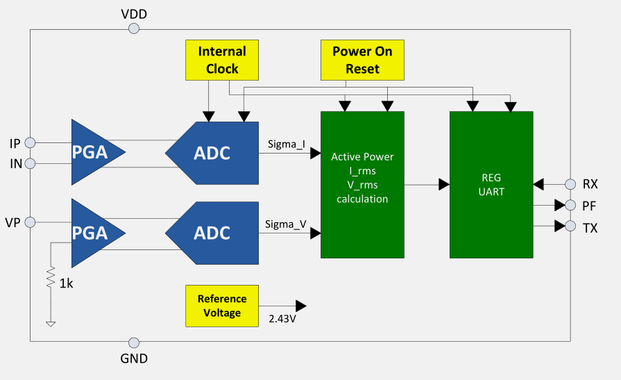
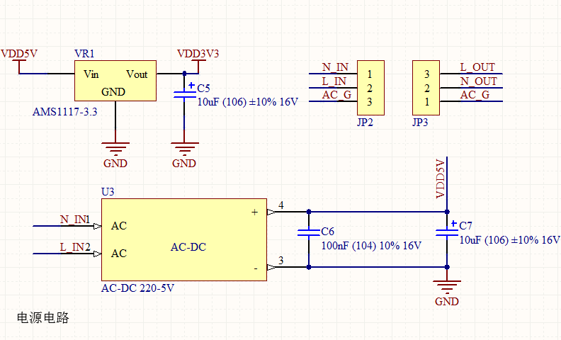
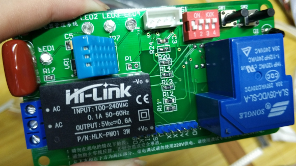

基于ESP8266控制系统设计
基于ESP8266控制系统设计
ESP8266模组内置32位微控制器，一般应用场合作wifi模块使用，调用AT指令来控制模块收发数据。本节通过对ESP8266模组内的微控制器进行编程，即可作为单片机正常读取外围传感器数据。适用于低功耗场景，且占用空间小。
- ESP8266工作模式：
ESP8266支持softAP模式，station模式，softAP+station 共存模式三种。SoftAP即无线接入点，是一个无线网络的中心节点。通常使用的无线路由器就是一个无线接入点。Station即无线终端，作为无线设备与softAP建立连接。
（1）ESP8266处于softAP模式：
ESP8266作为softAP，手机、电脑、用户设备、其他ESP8266 station接口等均可以作为station连入ESP8266，组建成一个局域网，在局域网内，所有station设备发送的信息都会通过SoftAP设备进行处理、转发，通过Station设备发送控制命令，就可以通过SoftAP设备间接控制处于同一局域网的其他Station设备。
（2）ESP8266处于Station模式：
ESP8266作为station，通过路由器（AP）连入internet，可向云端服务器上传、下载数据。用户可随时使用移动终端（手机、笔记本等），通过云端监控ESP8266设备的状况，向 ESP8266模块发送控制指令。
（3）ESP8266 在 SoftAP + station 共存模式:
ESP8266支持softAP+station共存的模式，用户设备、手机等可以作为station 连入 ESP8266的softAP接口, 同时，可以控制 ESP8266的station接口通过路由器（AP）连入 internet.
（一）传感器功能
以ESP8266作为控制单元，引出A0模拟量引脚，根据不同控制场景，选择搭载光敏传感器模块、PM2.5灰尘传感器、液体传感器以及红外火焰传感器等模拟量传感器。引出一路GPIO通用输入输出引脚，外接DHT11温湿度传感器。选用DHT11温湿度传感器的原因是： ESP8266-12f模块只有一路模拟量输入引脚，引脚资源紧张，选用数字式传感器更合理。所处控制场合对温湿度采集精度要求不高，且DHT11价格便宜，占用控制引脚少。
（二）电量监测功能
物联网智能家居设备，直接与电器设备相连。在特定场景下，使用者除了日常开关控制外，更想去关注电器设备运行状态以及电量信息。HLW8032是一款高精度的电能计量IC,它采用CMOS制造工艺，主要用于单相应用场合。HLW8032可以通过UART口进行数据通讯，HLW8032采用5V供电，内置3.579M晶振，8PIN的SOP封装，具有精度高、功耗小、可靠性高、适用环境能力强等优点，适用于单相两线制电力用户的电能计量。

HLW8032具有一个简单的UART接口，采用异步串行通讯方式，允许用两个单向引脚进行数据通讯，UART接口只需要一个低成本光电藕合器，就可以实现隔离通信。UART接口以4800 bps的固定频率工作，发送数据的间隔时间是50mS，适合低速设计。
HLW8032 每发送一次完整数据是 24byte; 从寄存器 1(State REG)开发发送，到寄存器11(CheckSum REG)结束一组数据，一共 11 个寄存器，24 byte 数据。在 HLW8032 的电源端，应并联两个小电容，以滤除来自电网高频及低频噪声。电流信号通过锰铜电阻采样后接入HLW8032，电压信号则通过电阻网络后输入到HLW8032。PF、TX直接接入到MCU的输入端，通过公计算计算出电压有效值、 电压流效值和有功功率值的大小。
（三）数据显示功能
硬件控制器搭载一块0.96寸 oled屏幕。OLED的基本结构是由一薄而透明具半导体特性之铟锡氧化物(ITO)，与电力之正极相连，再加上另一个金属阴极，包成如三明治的结构。整个结构层中包括了:空穴传输层(HTL)、发光层(EL)与电子传输层(ETL)。当电力供应至适当电压时，正极空穴与阴极电荷就会在发光层中结合，产生光亮，依其配方不同产生红、绿和蓝RGB三基色，构成基本色彩。OLED的特性是自己发光，不像TFT LCD需要背光，因此可视度和亮度均高，其次是电压需求低且省电效率高，加上反应快、重量轻、厚度薄，构造简单，成本低等。
OLED采用SSD1306 CMOS OLED驱动芯片驱动，该芯片专为阴极oled面板设计，SSD1306中嵌入了对比度控制器，显示RAM和晶振，并因此减少外部器件和功耗。有256级亮度控制。数据/命令有3种接口可选：6800/8000串口，I2C接口和SPI接口。
（四）执行机构
控制电器开关，依然采用继电器控制，但由于ESP8266控制方案针对单个电器进行控制的，所以继电器带的负载容量应相应增大。为了适应日常家用电器负载需求，选用SLA-5VDC-SL-A型号继电器。该继电器最大可带负载为交流 240v 30A，满足日常家用电器的用电需求。
电路原理图：

在实际应用场合中，控制器是与家用电器直接接入220v交流电网的，但是控制设备的传感器、芯片，正常工作时电压等级通常为直流5v，直流3.3v，所以需要将220v交流电转化为5v和3.3v直流电压。常见的转化方式大都用变压器耦合降压，通过整流桥整流，滤波稳压，达到需要的电压等级。但是此方式电路复杂且占用空间大，为了节省空间压缩电路板的体积，使设备尽可能小巧，所以选用HLK-PM01 AC-DC电源降压模块，该电源模块能将220v交流电转化为5v直流电，且输出电压纹波低，噪声小。得到直流5v电压后经过AMS1117-3.3 直流稳压模块将5v电压稳压至3.3v。
